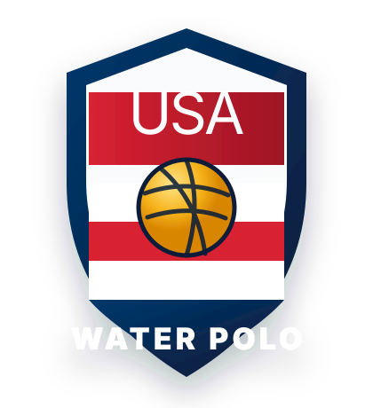

JO Girls Tournament Journey
Follow a team through Weekend 1 with live scores, game paths, possible opponents, and full division schedules.
Open tool →Weekend 1 tournament tool
Pick an age, division, and team to see the next game, win/loss path, possible opponents, completed scores, and full division schedule.

Active now
Follow a team through Weekend 1 with live scores, game paths, possible opponents, and full division schedules.
Open tool →Lightweight ranking signal and tournament context from the Quiksilver Cup.
Read recap →Review movement caps, field-size weighting, and ranking adjustment notes.
Open audit →See how CPI weighs JO, Futures, qualifiers, invitationals, and smaller events.
View methodology →